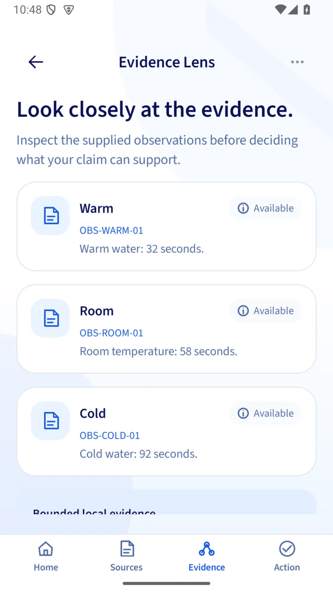
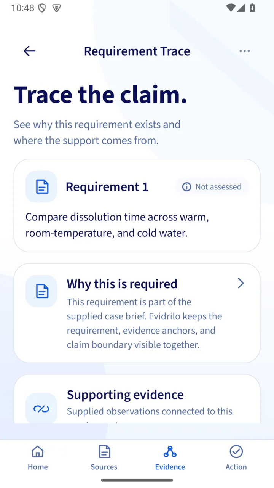
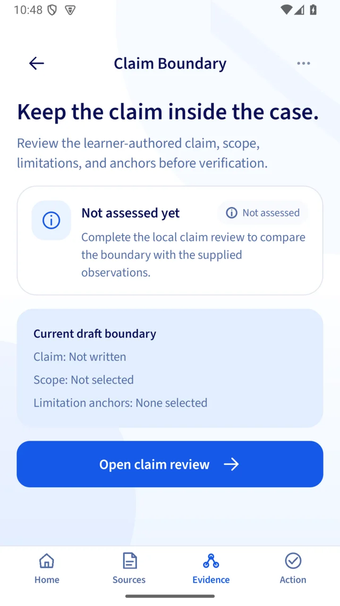

Bring the brief and write the question you want to explore. Start a blank project locally, then add your own material.
Your ideas.
A clearer path.
Bring your assignment. Build a local project around your question, sources, and claims, then keep track of what to do next.A local workspace for your question, sources, claims, and next steps.
Local projects. No account needed.
An evidence-grounded workspace for students.
From evidence to action.
Good ideas need
a place to grow.
Make space for your next project.
Create a projectBegin with your own assignment.
Your workspace
Local work stays on your device.
Keep the material
connected.
The path behind a claim stays visible.
Your chosen sourceRecorded and reviewed by you
An evidence noteLinked back to its source
YOUR DRAFTA claim you can trace.
Inspect the notes behind it, then write its scope and limits.
A useful next step.
Still your decision.
Make space for review and revision.
Review the source linksReturn to the material behind a draft.
Name the limitationKeep what remains uncertain visible.
Save a revisionKeep the change in your project history.
Project AIIn development · not live
Illustrative interface · scroll or select a screen
From a question
to a project.
A blank local project for directed literature synthesis. Bring your brief, connect your reading, and revise as you go.
Project previewIllustrative
A new project
Start with your question.
Assignment briefThe task you want to work on
Research questionWhat do you want to understand?
Create a blank project
Your sourcesChosen materialYour source notesReviewed by you
Evidence notesEach note keeps its source link
Your claimConnected to the notes behind it
Make the next decision visible.
- Check the links behind a claim
- Record limitations and next actions
- Keep a revision checkpoint
Project checks surface missing structure or links. Your academic judgment stays central.
Save the sources you choose. Link evidence notes to findings and claims, so you can revisit the material behind each draft.
Record what remains uncertain, note the next action, and keep a revision checkpoint. Your project can grow with your reasoning.
Keep going.
Keep it yours.
A project you can come back to.
Save, revisit, revise.
Keep local drafts and revision checkpoints. Complete a project, archive it, or move it to Trash when you’re ready.
Take the work with you.
Reports and .evproj exchange are implemented. Device save and reopen checks are still in progress.
Find a direction.
Browse five project-family guides. Ready-to-start, reviewed templates are still in preparation.
Project report
The thinking
behind the work.
Brief & questionSources & evidenceClaims, limits & next steps
PDFDOCXMDCSV
Local first. Signing in does not upload your projects.
Illustrative report layout · not a generated student report
A helping hand.
Your final say.
Project AI · in development
Project AI is being built to help draft a project and assist at supported stages. Choose the context, review the proposal, then edit, apply, or dismiss it.
- A draft from your brief and a reviewed template
- Assistance using only the context you select
- Editable proposals you can apply or dismiss
Live AI is not available yet: the provider is disabled and no reviewed template is selectable. Manual projects remain available.
Read the current limitsProject AIIllustrative interaction
Not liveYou choose what is shared.
Review the project, stage, selected material, and request cost before sending.
- Project
- Your selected project
- Stage
- Brief & question
- Material
- Selected fields only
A request needs your explicit consent.
A proposal you can inspect.
Suggested edits identify the context they use. Compare them with your own material before making a change.
An editable project draftCheck the brief, question, and supported fields.
AI suggestions are drafts, not evidence.
The project stays yours.
Edit a proposal, apply selected parts, or dismiss it. An applied change keeps its revision and AI provenance.
Apply selected edits Dismiss & continue
No source or claim is silently overwritten.
Concept preview. These controls explain the workflow and send no AI request.
Change a fact.
See the limit.
Try this fictional tablet-dissolution case. Remove an observation to see how the available comparison changes.
A guided practice example, separate from your own project.The supplied observations1 trial each
The comparison3 of 3 available
In this supplied case, dissolution took 32 seconds in warm water, 58 seconds at room temperature, and 92 seconds in cold water.
All three supplied conditions are available for comparison. This description stays within one trial per condition.
Interactive explainer from synthetic data. It does not assess your research or establish a universal scientific rule.
See the reasoning
up close.
Actual Android captures of the bundled guided case.



Guided-case screens, not captures of the manual project editor. Swipe to explore.
Before
you begin.
Evidrilo is in active development. Here is what the current paths support.
Can I start my own project?
Yes. Create a blank local project without an account. The current manual path focuses on directed literature synthesis: brief, question, sources, evidence notes, findings, claims, limitations, next actions, and revisions. Full device workflow acceptance is still in progress.
Which features need an account?
Local projects and project-family guides can be used without signing in. Account-backed services and the current guided-case app routes have separate sign-in gates. Signing in does not upload or merge local projects. The explainer on this page needs no account.
Is Project AI available now?
Not yet. Consent, project-bound assistance, proposal review, and credit boundaries exist in development code, but the provider is disabled. General chat also has development source and remains unavailable for live student use.
Are the templates ready to start?
The app has five family guides for orientation. No reviewed, student-selectable template is available yet. Start a blank project while templates are being prepared.
Can I export, import, or sync my work?
Markdown, PDF, DOCX, CSV reports, and .evproj import/export are implemented in source. Device picker, save, and reopen acceptance are still in progress. Projects remain on this device; cloud sync is unavailable.
Will it find sources or grade my research?
You choose and verify the material, write the claims, and judge their meaning. Evidrilo does not search literature, verify citations, or grade research. Project checks surface structural gaps; guided-case feedback stays within its supplied facts and rules.
A clearer path.
Still your work.
Your question. Your sources. Your judgment.
A workspace that keeps the connections in view.